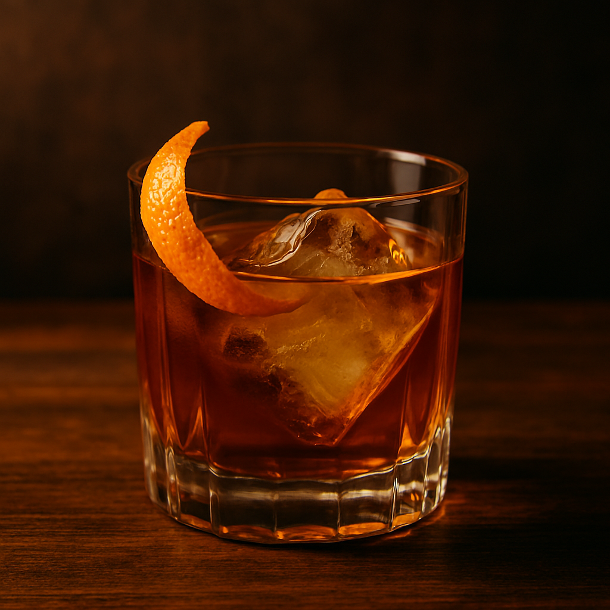

La Guía Definitiva
Domina el oficio. Conoce la historia. Perfecciona cada cóctel. Una guía profesional basada en los estándares de la International Bartenders Association.
El Oficio
Cada mililitro cuenta. Un bartender profesional domina las medidas exactas, los tiempos de agitación y las temperaturas ideales para cada preparación.
Desde la destilación hasta la fermentación, un bartender entiende la ciencia detrás de cada espíritu, licor y modificador que utiliza en sus creaciones.
La barra es un escenario. El bartender es anfitrión, psicólogo, artista y profesional. La experiencia del cliente es siempre la prioridad.
Desde las primeras tabernas del siglo XVIII hasta los speakeasies modernos, el bartending ha evolucionado manteniendo el respeto por sus raíces y clásicos.
"El conocimiento y la técnica también se beben"
— Jerry Thomas
Manual Profesional
Todo lo que necesitas saber para dominar la barra profesionalmente. Desde las herramientas esenciales hasta las técnicas avanzadas de preparación.
Dos piezas (vaso metálico + vaso de vidrio o metal). La preferida por profesionales por su versatilidad y rapidez. Requiere strainer separado.
Tres piezas (vaso, tapa con colador integrado y capuchón). Ideal para principiantes. El colador incorporado facilita el servicio.
Herramienta de medición de doble cara. Estándar: 1oz/2oz o 30ml/60ml. La precisión en las medidas es la base de la consistencia.
Cuchara larga de barra con espiral. Se usa para mezclar, medir (1 barspoon ≈ 5ml), hacer capas y como guía para vertido lento.
Colador con resorte metálico. Se usa con la coctelera Boston para colar cócteles agitados, reteniendo hielo y sólidos.
Malla fina para doble colado. Elimina pequeños fragmentos de hielo, pulpa y semillas para un resultado cristalino.
Para macerar frutas, hierbas y especias directamente en el vaso. Extraer aceites esenciales sin destrozar los ingredientes es clave.
Vaso de cristal grueso para cócteles revueltos (stirred). Diseñado para enfriar y diluir con elegancia. Esencial para Martinis y Manhattans.
Manual o de palanca. El zumo fresco es no negociable en coctelería profesional. Nunca uses zumo embotellado.
Para crear twists de cítricos. Un buen twist libera aceites esenciales que aromatizan el cóctel. Evita la parte blanca (amarga).
Para cócteles con zumos, cremas, huevo o ingredientes densos. Agitar vigorosamente 10-15 segundos con hielo. Enfría rápidamente y genera dilución y textura. Regla de oro: si tiene cítricos, se agita.
Para cócteles con solo espíritus y modificadores transparentes. Revolver 30-40 segundos en mixing glass con hielo. Produce dilución controlada sin aireación. Regla de oro: si todos los ingredientes son transparentes, se revuelve.
Preparar directamente en el vaso de servicio. Agregar ingredientes sobre hielo y mezclar brevemente. Ideal para highballs y tragos sencillos como Gin & Tonic o Cuba Libre.
Presionar suavemente ingredientes frescos para liberar sabores y aceites esenciales. No triturar — presionar y girar. Las hierbas se golpean (palmear), las frutas se presionan.
Agitar SIN hielo primero (para cócteles con clara de huevo o aquafaba), luego agregar hielo y agitar nuevamente. Crea una espuma densa y cremosa perfecta.
Verter lentamente sobre el dorso de la bar spoon para crear capas separadas. Los líquidos se ordenan por densidad. Requiere pulso firme y paciencia.
Mezclar con hielo en licuadora. Para cócteles frozen como Frozen Daiquiri o Piña Colada. El hielo debe quedar completamente integrado, textura suave.
Pasar el contenido de un vaso a otro suavemente. Mezcla sin agitación excesiva. Técnica clásica del Bloody Mary para mantener la textura sin aireación.

6-10 oz. Para cócteles servidos on the rocks o espíritus neat. Old Fashioned, Negroni, Whiskey Sour.
8-12 oz. Para tragos largos con mixer. Gin & Tonic, Moscow Mule, Cuba Libre, Paloma.
5-7 oz. Elegante copa de boca ancha. Para cócteles servidos up sin hielo. Daiquiri, Sidecar, Gimlet.
4-6 oz. La copa icónica en forma de V invertida. Dry Martini, Cosmopolitan, Aviation.
6-8 oz. Alargada para preservar la carbonatación. French 75, Bellini, Kir Royale.
5-6 oz. Copa elegante redondeada. Alternativa sofisticada al vaso Martini. Gin cocktails, Last Word.
10-14 oz. Más alto y estrecho que el highball. Tom Collins, John Collins, Mojito.
8-10 oz. Con asa para bebidas calientes. Irish Coffee, Hot Toddy, cócteles de café.
El más versátil. Dilución moderada y constante. Ideal para la mayoría de cócteles on the rocks y para agitar.
2" × 2". Se derrite lento, mínima dilución. Perfecto para espíritus premium servidos neat o cócteles como Old Fashioned.
Máxima superficie con mínimo contacto. Se derrite extremadamente lento. Presentación premium para whiskey y cócteles especiales.
Dilución rápida y enfriamiento instantáneo. Esencial para Juleps, Cobblers, Tiki drinks y cualquier cóctel frozen-style.
Para tallar a medida o para poncheras. El más lento en derretirse. Los bartenders artesanales lo tallan a mano.
Entre cubo y picado. Dilución media-rápida. Se obtiene rompiendo cubos con un mallet. Ideal para swizzles.
Cada país y estado tiene regulaciones diferentes sobre edad legal, horarios de servicio y licencias. Es tu responsabilidad conocerlas y cumplirlas sin excepción.
Habla arrastrada, falta de coordinación, cambios de humor bruscos, ojos vidriosos, agresividad. Aprende a identificar estas señales tempranamente.
Negar el servicio a una persona intoxicada es un deber legal y moral. Hazlo con respeto y firmeza. Ofrece agua, comida o transporte alternativo.
Nunca presiones para vender más. No participes en juegos de beber ni promuevas shots excesivos. Tu papel es ser guardián responsable.
Ten siempre un menú de mocktails de calidad. Un buen bartender hace sentir bienvenido a quien no bebe alcohol, sin hacerle sentir diferente.
International Bartenders Association
La International Bartenders Association, fundada en 1951 en Torquay, Inglaterra, establece los estándares globales de la coctelería profesional. Actualmente agrupa asociaciones de bartenders de más de 72 países.
La IBA fue fundada el 24 de febrero de 1951 por representantes de las asociaciones de bartenders de Dinamarca, Francia, Gran Bretaña, Italia, Países Bajos, Suecia y Suiza. Su misión es promover y mantener los más altos estándares profesionales en bartending a nivel mundial, fomentar el intercambio cultural y organizar competiciones internacionales.
Los cócteles que han resistido la prueba del tiempo. Creados antes o durante la Prohibición, son la columna vertebral de la coctelería clásica. Incluyen el Old Fashioned, Negroni, Manhattan y Dry Martini.
Cócteles que han ganado reconocimiento global en las últimas décadas. Incluyen el Cosmopolitan, Espresso Martini, y el Aperol Spritz. Reflejan la evolución moderna del oficio.
Las creaciones más recientes que han demostrado merecer un lugar en la lista oficial. Innovadores en técnica y combinaciones, como el Penicillin y el Spicy Fifty.
Los competidores disponen de 7 minutos para preparar y presentar su cóctel, incluyendo decoración y limpieza del área de trabajo.
Las competiciones se dividen en: Cócteles Clásicos (recetas IBA oficiales), Fancy/Flair (estilo libre con espectáculo) y No Alcohólicos.
Los jueces evalúan: Sabor (50%), Técnica (20%), Presentación (15%), Higiene (10%) y Creatividad (5%).
Todas las recetas IBA usan centilitros (cl) como unidad estándar. 1 cl = 10 ml. La precisión es obligatoria: se evalúa con jigger.
Recetario Clásico
Cada receta incluye la fórmula oficial IBA, historia de creación, y las notas del bartender profesional. Domina estos clásicos y tendrás la base para cualquier creación.
Referencia Rápida